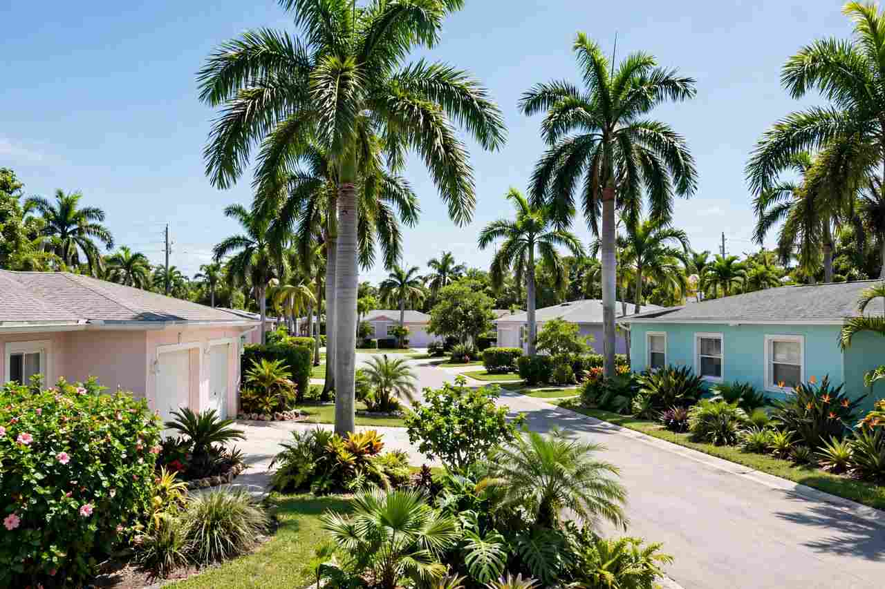

Rodent Control · New Smyrna Beach, FL
Trusted Rodent Control in New Smyrna Beach, FL
If rodents have moved into your New Smyrna Beach home or business, Murvo can help today. Our local, licensed crews provide same-day inspection, targeted removal, durable exclusion, and cleanup, all under one flat-rate written quote with a written guarantee. No hourly billing and no surprise add-ons, just rodent specialists serving New Smyrna Beach and communities throughout Volusia County every day of the week. Service covers 3 ZIP codes across Volusia County, including 32170, 32169, 32168, with same-day appointments where schedules allow.
24/7Availability
3ZIP codes covered
Same-dayResponse
Licensed · Upfront options · Written guarantees · Fully insured
New Smyrna Beach at a glance
Local Rodent Control for New Smyrna Beach, FL.
Volusia County
Countynortheast Florida
RegionDeltona · 17 mi
Nearest metro222 miles southeast of Tallahassee
From Tallahassee3
ZIP codes covered Service by service in New Smyrna Beach
Rodent Control Services Available in New Smyrna Beach
Thirty rodent services, one local standard in New Smyrna Beach: inspection-led, exclusion-first, and quoted in writing before work begins. Browse the full list for Volusia County below - each section explains what the service involves here, what it typically costs nationally, and how fast we can start.
- 01Rodent Control↗
- 02Rodent Inspection↗
- 03Rodent Removal↗
- 04Rodent Exclusion↗
- 05Rodent Proofing↗
- 06Rat Control↗
- 07Mice Control↗
- 08Mouse Removal↗
- 09Rat Removal↗
- 10Rodent Trapping↗
- 11Rodent Baiting↗
- 12Rodenticide Application↗
- 13Attic Rodent Removal↗
- 14Crawl Space Rodent Removal↗
- 15Wall Rodent Removal↗
- 16Kitchen Rodent Control↗
- 17Garage Rodent Control↗
- 18Commercial Rodent Control↗
- 19Residential Rodent Control↗
- 20Emergency Rodent Removal↗
- 21Same-Day Rodent Control↗
- 22Rodent Damage Repair↗
- 23Rodent Waste Cleanup↗
- 24Rodent Disinfection↗
- 25Rodent Odor Removal↗
- 26Dead Rodent Removal↗
- 27Rodent Dropping Cleanup↗
- 28Rodent Exclusion for Roofs↗
- 29Rodent Exclusion for Vents↗
- 30Rodent Exclusion for Chimneys↗
Rodent Control in New Smyrna Beach
Rodent Control in New Smyrna Beach
In New Smyrna Beach, ranch and stucco homes, waterfront and canal homes, condos, and vacation rentals give rodents warmth, shelter, and easy routes through rooflines, eaves and soffits, attic and gable vents, pool equipment areas, and garage door seals, especially once nights turn cold across Volusia County. Our licensed, insured technicians identify the species, map active runways, and build a control plan around your home rather than a generic spray. Every visit is documented with photos, trap records, and clear next steps for your household.
When you need rodent control in New Smyrna Beach, the job starts with what is actually happening in your part of Volusia County. Murvo crews work New Smyrna Beach every week, so they know how Roof rat (Rattus rattus) and Norway rat (Rattus norvegicus) behave around ranch and stucco homes, waterfront and canal homes, condos, and vacation rentals here - and where they get in: rooflines, eaves and soffits, attic and gable vents, pool equipment areas, and garage door seals. We arrive equipped for the full job, confirm the flat rate in writing before work begins, and cover the whole New Smyrna Beach area, including Glencoe, Edgewater. No call-center runaround and no open-ended hourly billing - just a local crew, a clear plan, and a written quote you approve first. Seasonal timing matters for rodent control in New Smyrna Beach: Rodents are active year-round in New Smyrna Beach because there is no hard freeze.
Consider how a visit unfolds. Inside, attic and crawl-space evidence shapes the trapping plan, which is adjusted visit by visit as numbers change. Cleanup guidance covers contaminated areas safely, and exclusion work closes the route permanently. Throughout, photographs and written notes keep you informed, so progress is something you can see and verify rather than something you are asked to trust. The technician walks the exterior before touching anything indoors, noting gaps, rub marks, and food sources. Photographs taken at the start make those later comparisons honest, because memory alone tends to blur the details.
Getting started takes one conversation, day or night, because our lines stay open 24/7. Work proceeds only after your approval, in stages you can follow, and a final walkthrough reviews every seal and every monitoring result before sign-off. We book a window that suits your household, confirm access needs in advance, and arrive prepared. Questions after sign-off are welcome at any hour, and the same written record helps any technician pick up your case immediately.
In most of New Smyrna Beach, we can offer a same-day appointment for rodent control, and our lines are open 24/7 for urgent cases like scratching in the walls or a rodent in a living area. Your technician inspects first, explains the plan, and quotes a flat rate in writing before any work begins, so help starts fast without surprises. Around New Smyrna Beach, ranch and stucco homes, waterfront and canal homes, condos, and vacation rentals give rodents the most cover, which is why entry points get checked before traps are set.
Murvo does not quote rodent control sight unseen, because species, activity, and sealing needs change the work involved. After inspection you get one flat-rate written quote, and that is the figure you pay. As national context only, Angi's 2026 figures put rat and mouse removal and control at an average of $396, with a typical range of $189 to $655 — a benchmark, not a Murvo price.
Rodent Inspection in New Smyrna Beach
Rodent Inspection in New Smyrna Beach
Most New Smyrna Beach inspections start with uncertainty: a noise, a smell, a few droppings that might be old. Murvo turns that uncertainty into a written record. A rodent inspection checks attic, crawl space, roofline, and foundation, photographs the evidence, and ends with a flat-rate written quote for anything worth fixing.
When you need rodent inspection in New Smyrna Beach, the job starts with what is actually happening in your part of Volusia County. Murvo crews work New Smyrna Beach every week, so they know how Roof rat (Rattus rattus) and Norway rat (Rattus norvegicus) behave around ranch and stucco homes, waterfront and canal homes, condos, and vacation rentals here - and where they get in: rooflines, eaves and soffits, attic and gable vents, pool equipment areas, and garage door seals. We arrive equipped for the full job, confirm the flat rate in writing before work begins, and cover the whole New Smyrna Beach area, including Glencoe, Edgewater. No call-center runaround and no open-ended hourly billing - just a local crew, a clear plan, and a written quote you approve first. Homes near Oak Hill tend to show activity first in New Smyrna Beach, which is why inspections start with rooflines, eaves and soffits, attic and gable vents, pool equipment areas, and garage door seals.
We listen first: when you hear noises, and where, often points straight to the most active nesting areas. Technicians then trace active runways, identify whether droppings belong to Roof rat (Rattus rattus) or Norway rat (Rattus norvegicus), and check insulation and wiring for damage. The visit ends with a written report covering species, entry points, contamination, and the removal and exclusion steps we recommend, each with a flat-rate price. That detail stops you paying for treatment aimed at the wrong species or the wrong part of the building.
After booking, we confirm your time window by text or call. Before leaving, they review photos and priorities with you, leave the written findings, and schedule any follow-up work you approve. On arrival, your background-checked technician checks in, protects floors and access points, and works through a set inspection checklist inside and out. The inspection itself is backed by licensed, insured service and our written workmanship guarantee on quoted work.
You do not have to wait days for answers in New Smyrna Beach. Same-day rodent inspection appointments are available in most areas, urgent calls are taken 24/7, and most home inspections take under an hour. You finish the visit with photos, written findings, and flat-rate pricing for anything we recommend. Around New Smyrna Beach, ranch and stucco homes, waterfront and canal homes, condos, and vacation rentals give rodents the most cover, which is why entry points get checked before traps are set.
Nationally, a professional rodent inspection typically runs $100 to $200 according to Angi's 2026 data, and it is often credited toward the job if you proceed. Murvo confirms your exact rodent inspection price before the visit and quotes any follow-up work as a flat rate in writing after inspection, so the figure you approve is the figure you pay, with no hourly billing.
Rodent Removal in New Smyrna Beach
Rodent Removal in New Smyrna Beach
Removal works best when it is species-specific. In New Smyrna Beach, ranch and stucco homes, waterfront and canal homes, condos, and vacation rentals give Roof rat (Rattus rattus) and Norway rat (Rattus norvegicus) warm voids, stored food, and quiet nesting corners reached through rooflines, eaves and soffits, attic and gable vents, pool equipment areas, and garage door seals. Our licensed, insured technicians assess numbers and access routes first, then set traps on proven runways and return on schedule until catches fall to zero and monitoring stays clear.
When you need rodent removal in New Smyrna Beach, the job starts with what is actually happening in your part of Volusia County. Murvo crews work New Smyrna Beach every week, so they know how Roof rat (Rattus rattus) and Norway rat (Rattus norvegicus) behave around ranch and stucco homes, waterfront and canal homes, condos, and vacation rentals here - and where they get in: rooflines, eaves and soffits, attic and gable vents, pool equipment areas, and garage door seals. We arrive equipped for the full job, confirm the flat rate in writing before work begins, and cover the whole New Smyrna Beach area, including Glencoe, Edgewater. No call-center runaround and no open-ended hourly billing - just a local crew, a clear plan, and a written quote you approve first. Homes near Oak Hill tend to show activity first in New Smyrna Beach, which is why inspections start with rooflines, eaves and soffits, attic and gable vents, pool equipment areas, and garage door seals.
Removal starts with an assessment of species, numbers, and access routes across attics, wall voids, garages, and kitchens. Removal is followed immediately by entry-point exclusion, because new rodents will replace removed ones through any gap left open, and disinfection is arranged after heavy activity. Once you approve the written quote, technicians set traps along proven runways, check them on schedule, and remove animals promptly and hygienically. Catch records show progress clearly instead of relying on guesswork. Photos document each stage for you.
Call, describe the signs, and we will set a visit window, often for the same day. With approval, traps go in immediately. Return visits are already booked, so clearing, resetting, and progress updates happen without you chasing anyone for news. The first appointment confirms species and numbers, explains the trapping sequence, and produces your written quote. Photographs and catch records are shared as the program runs, giving you visible proof of progress rather than a verbal summary at the end.
For active infestations in New Smyrna Beach, rodent removal can usually start the same day you call, and our team answers 24/7 when a rodent is loose in a living area. The first visit confirms activity and sets traps straight away; return visits then clear and reset them until monitoring shows the property is completely clear. Murvo's New Smyrna Beach crews explain the finding either way, and the flat-rate quote leaves the decision with you.
How many animals are active, which species they are, and how much sealing follows removal all shape the price, so we assess first and then quote one flat rate in writing. Angi's 2026 national context — an average of $396 and a typical $189 to $655 range for rat and mouse removal — is provided for comparison only; your written quote is the exact Murvo figure.
Rodent Exclusion in New Smyrna Beach
Rodent Exclusion in New Smyrna Beach
Rats can pass through a hole the size of a quarter, and mice through one far smaller, which is why ranch and stucco homes, waterfront and canal homes, condos, and vacation rentals in New Smyrna Beach hide so many working entry points around rooflines, eaves and soffits, attic and gable vents, pool equipment areas, and garage door seals. Our technicians inspect soffits, eaves, pipe entries, foundation cracks, and door sweeps in detail, then prioritize the openings that matter most for Roof rat (Rattus rattus) and Norway rat (Rattus norvegicus) locally.
Homeowners in New Smyrna Beach call Murvo for rodent exclusion because the problem here is specific: Roof rat (Rattus rattus) pressure around ranch and stucco homes, waterfront and canal homes, condos, and vacation rentals, tight access at rooflines, eaves and soffits, attic and gable vents, pool equipment areas, and garage door seals, and activity that follows the local season. Our Volusia County crews diagnose the real source before recommending work, explain the options in plain language, and quote one flat rate in writing. Across New Smyrna Beach - including Glencoe, Edgewater - every visit is backed by licensed, insured technicians and our written workmanship guarantee. Around Oak Hill, Glencoe, Edgewater, the pattern is similar: Norway rat (Rattus norvegicus) finds rooflines, eaves and soffits, attic and gable vents, pool equipment areas, and garage door seals first, and lasting rodent exclusion has to close those routes.
Exclusion begins with a full exterior survey, paying particular attention to junctions where different materials meet, because those seams and transitions open up as a building ages and settles. Each opening is sealed with materials matched to it: copper mesh packed into gaps, hardware cloth over vents, metal flashing at roof junctions, and quality sealants for smaller cracks. Door sweeps are fitted, pipe gaps closed, and specialist roof, vent, and chimney sealing finished to weatherproof standards. Active animals are trapped out first.
The visit starts with a check that no animals remain inside, using trapping and monitoring where needed. Once clear, your background-checked crew seals the agreed openings with chew-resistant materials, working cleanly around your home. Before leaving, we show you each finished seal, explain how it was protected, and confirm the guarantee paperwork. A later re-check confirms the seals are holding and activity has stopped. You approve the finished work before we close the job.
Rodent exclusion in New Smyrna Beach usually starts with a survey visit we can often schedule the same day you call. Sealing itself is booked as soon as any active animals are cleared, because nothing is sealed inside. Most homes are fully sealed within days, not weeks, and urgent entry points near wiring or food areas are prioritized first. Murvo's New Smyrna Beach crews explain the finding either way, and the flat-rate quote leaves the decision with you.
For national context, Angi's 2026 data puts basic exclusion at $200 to $600, depending on access and the number of openings. That is a benchmark, not a Murvo price. After surveying your New Smyrna Beach home, we list every opening that needs sealing and quote one flat rate in writing, so you pay for the work your property actually needs and nothing more.
Rodent Proofing in New Smyrna Beach
Rodent Proofing in New Smyrna Beach
Proofing matters most where rodent pressure stays high all year: older ranch and stucco homes, waterfront and canal homes, condos, and vacation rentals in New Smyrna Beach, homes near fields, water, or dense vegetation, and properties with cluttered garages or overhanging branches. Our plan separates quick wins you can handle yourself from specialist sealing that needs professional materials, keeping the whole program practical, transparent, and easy to stage over time.
In New Smyrna Beach, rodent proofing is not a generic spray-and-go service. Rodents exploit rooflines, eaves and soffits, attic and gable vents, pool equipment areas, and garage door seals in ranch and stucco homes, waterfront and canal homes, condos, and vacation rentals, and a fix that ignores those routes does not last. Murvo's New Smyrna Beach team inspects first, shows you the evidence - droppings, gnaw marks, entry gaps - and then lays out the work with a flat-rate written quote. We serve all of Volusia County from New Smyrna Beach, including Glencoe, Edgewater, and every job is covered by our written workmanship guarantee. Seasonal timing matters for rodent proofing in New Smyrna Beach: Rodents are active year-round in New Smyrna Beach because there is no hard freeze.
Proofing divides naturally into structure, surroundings, and habits. Structure means sealing utility entries, screening vents and chimneys, and fitting sweeps where doors leak light. Surroundings means trimming branches back from the roofline, moving clutter and timber away from walls, and reducing sheltered harborage. Habits means securing pet food, bird seed, and stored produce so the property stops advertising itself. Technicians assess all three layers in one survey and rank the combined findings by impact, not by what is easiest to sell.
Arrange a survey at a time that suits you; there is no emergency, so scheduling stays relaxed. You then receive a written quote separating essential work from optional improvements, and nothing proceeds without your say-so. Your technician walks every side of the property with you, photographs weak points, and talks through the plan in plain language. Staging the work is fine; essential sealing can proceed first while optional improvements wait until a season or budget that suits you better.
Rodent proofing is preventive, so there is rarely a rush, but surveys in New Smyrna Beach can often be arranged the same day you call, and always within a few days. Most proofing work is completed in a single visit once you approve the plan, and booking before colder weather gives your home protection ahead of the seasonal rush indoors. That is also why Murvo pairs removal with exclusion in New Smyrna Beach - treating the animal without closing rooflines, eaves and soffits, attic and gable vents, pool equipment areas, and garage door seals rarely lasts.
We survey your New Smyrna Beach property first, separate the quick wins you can handle yourself from the specialist sealing, and quote the professional work as one flat rate in writing so spending can be staged. Angi's 2026 national context puts exclusion, the core of proofing, at $200 to $600 for basic work — a benchmark only, not a Murvo price.
Rat Control in New Smyrna Beach
Rat Control in New Smyrna Beach
In New Smyrna Beach, ranch and stucco homes, waterfront and canal homes, condos, and vacation rentals give Roof rat (Rattus rattus) and Norway rat (Rattus norvegicus) harborage in attics, basements, and outbuildings, with food and water rarely far away. Our licensed, insured technicians check drains, vents, and outbuildings too, because rats travel between structures and one missed harborage undermines the whole program. Safety briefings cover trap locations and hygiene so your household knows the plan.
When you need rat control in New Smyrna Beach, the job starts with what is actually happening in your part of Volusia County. Murvo crews work New Smyrna Beach every week, so they know how Roof rat (Rattus rattus) and Norway rat (Rattus norvegicus) behave around ranch and stucco homes, waterfront and canal homes, condos, and vacation rentals here - and where they get in: rooflines, eaves and soffits, attic and gable vents, pool equipment areas, and garage door seals. We arrive equipped for the full job, confirm the flat rate in writing before work begins, and cover the whole New Smyrna Beach area, including Glencoe, Edgewater. No call-center runaround and no open-ended hourly billing - just a local crew, a clear plan, and a written quote you approve first. Around Oak Hill, Glencoe, Edgewater, the pattern is similar: Norway rat (Rattus norvegicus) finds rooflines, eaves and soffits, attic and gable vents, pool equipment areas, and garage door seals first, and lasting rat control has to close those routes.
Safety shapes every placement decision. Traps are positioned away from pet routes and play areas and explained to the household in advance. Where bait is genuinely necessary outdoors, it goes only inside locked, tamper-resistant stations, secured and labeled, never loose, and always alongside trapping and sealing rather than instead of them. Droppings are handled carefully: surfaces are disinfected before cleaning, never dry-swept, because disturbing dry material can spread contamination through the air. Households receive that safety briefing in plain terms before the first station or trap is ever left behind.
Call and describe where signs are strongest; that directs the first inspection. Approval starts the program the same visit, with follow-up checks booked ahead so momentum never depends on you calling back. Your technician maps routes and harborage, explains the pre-baiting plan honestly, including why results build over days, and provides the written quote. You will know after each visit what was caught, where placements changed, and what the next check is specifically looking for.
Rats do not wait, and neither do we: rat control in New Smyrna Beach can usually start with a same-day inspection, and urgent calls are answered 24/7. Pre-baiting begins on the first visit once you approve the written quote, traps are set as soon as rats are feeding confidently, and scheduled checks keep the program moving until activity stops. In Volusia County, most cases involve the Roof rat (Rattus rattus) and the Norway rat (Rattus norvegicus), so the inspection focuses on their routes first.
Species, colony size, and the number of entry points to seal all affect rat work, which is why Murvo inspects first and quotes one flat rate in writing. Angi's 2026 figures, given for national context only, average rat control and removal at $396 and typically run $189 to $655; the written quote for your New Smyrna Beach home is the exact price.
Mice Control in New Smyrna Beach
Mice Control in New Smyrna Beach
Small rice-like droppings, shredded nesting material, and faint scratching after dark are the classic signs mice have moved into a New Smyrna Beach home. Murvo's mice control surveys activity and entry points, traps in clusters along the routes mice travel nightly, and seals gaps as small as a pencil width. One flat-rate written quote covers the program before work begins.
In New Smyrna Beach, mice control is not a generic spray-and-go service. Rodents exploit rooflines, eaves and soffits, attic and gable vents, pool equipment areas, and garage door seals in ranch and stucco homes, waterfront and canal homes, condos, and vacation rentals, and a fix that ignores those routes does not last. Murvo's New Smyrna Beach team inspects first, shows you the evidence - droppings, gnaw marks, entry gaps - and then lays out the work with a flat-rate written quote. We serve all of Volusia County from New Smyrna Beach, including Glencoe, Edgewater, and every job is covered by our written workmanship guarantee. Coverage for mice control spans 3 ZIP codes in Volusia County, including 32170, 32169, 32168.
The program starts with an activity and entry-point survey covering kitchens, attics, wall voids, and under-floor spaces. We then seal pencil-width gaps, including the overlooked routes behind baseboards and where pipes and wires pass through floors, and advise on cleaning scent-marked surfaces. Traps are placed in clusters along baseboards, behind appliances, and in attic voids, because mice travel the same short routes nightly. Technicians return to clear and reset traps and track numbers until they reach zero. Follow-up monitoring confirms the result before sign-off.
Book mice control in New Smyrna Beach with one call, and same-day visits are available in many areas. Your technician surveys the kitchen, attic, and voids, explains where mice are traveling, and gives you a flat-rate written quote before setting a single trap. Trap checks are scheduled before we leave, and a follow-up visit confirms activity has stopped before the job is signed off. Everything is explained in plain language for your household.
Mice programs move quickly in New Smyrna Beach: a mice control survey can often be arranged the same day you call, and traps are set on that first visit once you approve the quote. Because mice investigate new objects fast, catches usually begin quickly, and scheduled check visits follow until a final confirmation shows activity has fully stopped. In Volusia County, most cases involve the Roof rat (Rattus rattus) and the Norway rat (Rattus norvegicus), so the inspection focuses on their routes first.
The number of rooms affected and the amount of sealing required set the price, so Murvo surveys first and quotes one flat rate in writing. For national context only, Angi's 2026 data averages rat and mouse control and removal at $396, typically $189 to $655 — not a Murvo price; your written quote is exact.
Mouse Removal in New Smyrna Beach
Mouse Removal in New Smyrna Beach
Mice nest where it is warm and undisturbed: attics, wall voids, crawl spaces, and behind kitchen cabinets in ranch and stucco homes, waterfront and canal homes, condos, and vacation rentals across New Smyrna Beach. They feed close to those nests, following rooflines, eaves and soffits, attic and gable vents, pool equipment areas, and garage door seals and pipe runs between rooms. Our technicians check warm spots near water heaters and appliances where mice raise young, so no nesting site is missed during removal.
Homeowners in New Smyrna Beach call Murvo for mouse removal because the problem here is specific: Roof rat (Rattus rattus) pressure around ranch and stucco homes, waterfront and canal homes, condos, and vacation rentals, tight access at rooflines, eaves and soffits, attic and gable vents, pool equipment areas, and garage door seals, and activity that follows the local season. Our Volusia County crews diagnose the real source before recommending work, explain the options in plain language, and quote one flat rate in writing. Across New Smyrna Beach - including Glencoe, Edgewater - every visit is backed by licensed, insured technicians and our written workmanship guarantee. Around Oak Hill, Glencoe, Edgewater, the pattern is similar: Norway rat (Rattus norvegicus) finds rooflines, eaves and soffits, attic and gable vents, pool equipment areas, and garage door seals first, and lasting mouse removal has to close those routes.
The survey comes first, and it is deliberately thorough. Traps are then set in multiples at proven points, because a single trap rarely reflects colony size. Returns are scheduled tightly: catches are cleared, traps reset, and numbers tracked until they fall to zero and stay there across a confirming check before sealing begins. Lofts, under-floor voids, cabinets, and the spaces behind kitchen units are checked for nests, droppings, and stored food caches. Photographs of nesting sites help here, because they reveal how far activity had spread before trapping began.
For mice active in living areas, call and we will aim for a same-day start where available. Traps are placed only after approval, return visits are booked ahead, and you receive a plain update after every check without chasing. The first visit surveys nesting sites, sets out the multi-trap plan, and confirms your written quote. Rooms are returned to normal use as soon as their checks are clear, and we tell you plainly which areas those are.
For mice active in kitchens or living areas of your New Smyrna Beach home, mouse removal can often begin the same day you call. That first visit surveys nesting sites and sets traps as soon as you approve the quote, and because mice investigate traps quickly, catches usually start fast. Return visits continue until numbers reach zero. The written quote for your New Smyrna Beach property will spell out exactly which of these applies before any work starts.
Mouse removal cost reflects the number of rooms involved and how much sealing is needed, which is why Murvo surveys first and quotes a flat rate in writing. For national context only, Angi's 2026 data averages rat and mouse removal at $396, typically $189 to $655. That benchmark is not a Murvo price; your written quote covers your exact program.
Rat Removal in New Smyrna Beach
Rat Removal in New Smyrna Beach
If a rat is loose in a living area tonight, call; our lines stay open 24/7. Murvo pairs urgent response with a documented plan: hygienic removal across repeat visits, evidence from monitoring at the end, and a final walkthrough, so clearance is demonstrated to you rather than simply announced.
When you need rat removal in New Smyrna Beach, the job starts with what is actually happening in your part of Volusia County. Murvo crews work New Smyrna Beach every week, so they know how Roof rat (Rattus rattus) and Norway rat (Rattus norvegicus) behave around ranch and stucco homes, waterfront and canal homes, condos, and vacation rentals here - and where they get in: rooflines, eaves and soffits, attic and gable vents, pool equipment areas, and garage door seals. We arrive equipped for the full job, confirm the flat rate in writing before work begins, and cover the whole New Smyrna Beach area, including Glencoe, Edgewater. No call-center runaround and no open-ended hourly billing - just a local crew, a clear plan, and a written quote you approve first. Homes near Oak Hill tend to show activity first in New Smyrna Beach, which is why inspections start with rooflines, eaves and soffits, attic and gable vents, pool equipment areas, and garage door seals.
We lead with trapping and exclusion in an integrated, pet-conscious approach, using locked bait stations only where genuinely justified and monitored on schedule. Monitoring devices and a final walkthrough then provide documented evidence that activity has ended, and ongoing proofing keeps drains, vents, and rooflines checked afterwards. After clearance, contaminated insulation areas can be sanitized, and droppings are never dry-swept: following CDC guidance, surfaces are disinfected first before waste is removed. That evidence is always shared with you in writing.
Book rat removal in New Smyrna Beach and we will agree a visit time, with same-day appointments available for active infestations. Repeat visits are scheduled ahead to remove animals and adjust traps. At the end, monitoring and a walkthrough confirm clearance, backed by our written workmanship guarantee. Your technician assesses species and colony size, explains the program, and confirms a flat-rate written quote before trapping starts. You see documented evidence of the result.
Rats in a living area cannot wait for a routine slot. In New Smyrna Beach, rat removal can usually start the same day you call and our line answers 24/7 for urgent cases. Pre-baiting starts on the first visit after you approve the written quote, traps are set once rats feed confidently — typically within days — and frequent returns run until monitoring confirms the colony is gone. In Volusia County, activity follows the local season, so timing the work matters as much as the method.
Rat removal pricing depends on colony size, access, and the sealing needed afterwards, so Murvo assesses your property first and quotes a flat rate in writing. For national context only, Angi's 2026 data averages rat removal at $396, typically $189 to $655. That is a benchmark, not a Murvo price, and your written quote covers the full program described.
Rodent Trapping in New Smyrna Beach
Rodent Trapping in New Smyrna Beach
In ranch and stucco homes, waterfront and canal homes, condos, and vacation rentals, species behavior drives every choice. Wary Roof rats (Rattus rattus) need days of pre-baiting before unset traps can be armed, while Norway rats (Rattus norvegicus) investigate clustered traps quickly near rooflines, eaves and soffits, attic and gable vents, pool equipment areas, and garage door seals routes across Volusia County. Our technicians match device, bait, and position to that behavior instead of relying on a single generic setup.
In New Smyrna Beach, rodent trapping is not a generic spray-and-go service. Rodents exploit rooflines, eaves and soffits, attic and gable vents, pool equipment areas, and garage door seals in ranch and stucco homes, waterfront and canal homes, condos, and vacation rentals, and a fix that ignores those routes does not last. Murvo's New Smyrna Beach team inspects first, shows you the evidence - droppings, gnaw marks, entry gaps - and then lays out the work with a flat-rate written quote. We serve all of Volusia County from New Smyrna Beach, including Glencoe, Edgewater, and every job is covered by our written workmanship guarantee. Coverage for rodent trapping spans 3 ZIP codes in Volusia County, including 32170, 32169, 32168.
A trapping program starts with inspection: identifying the species, mapping runways, and finding where droppings and rub marks show real travel. For rats, we pre-bait unset traps for several days, a step most DIY attempts skip, then set them for maximum effect. Mice receive clustered traps at hotspots. Technicians return on schedule to clear, reset, and record every catch. Traps are set perpendicular to walls and along beams, pipes, and fence lines, matched to the setting. Placements shift as activity patterns change.
Call to book, and a first visit can often happen the same day. Nothing proceeds without approval. Scheduled returns then clear, reset, and record catches, sharing the running total with you at every single visit. That visit maps activity, places or pre-baits devices, and produces your written quote for the full program including checks. Catch records are never an afterthought; they are the evidence that decides when trapping ends and monitoring alone takes over.
In New Smyrna Beach, rodent trapping can usually start the same day you call, with traps placed or pre-baiting begun on the first visit after you approve the quote. Mice often investigate within the first night; wary rats need a few days of pre-baiting before traps are set. Scheduled check visits then keep catches moving until numbers reach zero. If you are seeing signs now, an inspection this week is the fastest way to know which situation you are in.
Trapping is usually quoted as part of a complete removal program rather than by the trap, and the price depends on species, activity level, and how many check visits are needed. Murvo inspects first and quotes one flat rate in writing covering the program and its check visits, so there are no per-visit surprises and no hourly billing at any stage.
Rodent Baiting in New Smyrna Beach
Rodent Baiting in New Smyrna Beach
Most New Smyrna Beach baiting requests start with returning droppings outdoors, around garages, sheds, or fence lines. Murvo answers carefully: activity is mapped first, trapping and exclusion come first, and any stations used are locked and tamper-resistant. One flat-rate written quote covers placement, monitoring, and eventual removal of every station.
When you need rodent baiting in New Smyrna Beach, the job starts with what is actually happening in your part of Volusia County. Murvo crews work New Smyrna Beach every week, so they know how Roof rat (Rattus rattus) and Norway rat (Rattus norvegicus) behave around ranch and stucco homes, waterfront and canal homes, condos, and vacation rentals here - and where they get in: rooflines, eaves and soffits, attic and gable vents, pool equipment areas, and garage door seals. We arrive equipped for the full job, confirm the flat rate in writing before work begins, and cover the whole New Smyrna Beach area, including Glencoe, Edgewater. No call-center runaround and no open-ended hourly billing - just a local crew, a clear plan, and a written quote you approve first. The New Smyrna Beach crews who handle rodent baiting also handle the follow-through - proofing, cleanup, and monitoring - so one visit can close the whole problem.
Placement discipline protects the household. Records from each visit show consumption trends honestly, including when activity has moved rather than fallen, so decisions about continuing, relocating, or removing stations rest on evidence you can inspect yourself. Stations stay away from pet play areas, food storage, and anywhere children gather, and every location is agreed with you before installation. If a property cannot be baited safely, technicians say so and rely on trapping and proofing instead. You receive copies of those records, so the reasoning behind every placement decision is open to inspection.
During monitoring, keep station areas undisturbed and tell us about any change in droppings or sightings. Your technician checks consumption on schedule, reports the trend plainly, and adjusts or removes stations as evidence dictates. The program closes with stations out, sealing recommendations confirmed, and the full record, including photographs, left with you in writing. If your household circumstances change, tell us; station locations and the wider plan can be reviewed and adjusted at the next check.
In New Smyrna Beach, rodent baiting starts with an inspection visit we can often arrange the same day you call. Stations are only placed after activity is mapped and you approve the written quote and each location, so setup is deliberate rather than rushed. Monitoring visits then run on a fixed schedule until consumption stops and activity is confirmed clear. If you are seeing signs now, an inspection this week is the fastest way to know which situation you are in.
Baiting cost depends on how many locked stations your property needs and how long monitoring runs, so Murvo inspects and maps activity first, then quotes one flat rate in writing covering placement and scheduled checks. There are no per-visit surprises, and because our approach is exclusion-first, the goal is always to reduce and eventually remove stations, not maintain them forever.
Rodenticide Application in New Smyrna Beach
Rodenticide Application in New Smyrna Beach
Our approach in New Smyrna Beach is exclusion-first: seal entry points, trap active animals, and shrink the need for chemical control quickly. Where rodenticide application is genuinely justified for Roof rat (Rattus rattus) or Norway rat (Rattus norvegicus), a licensed technician maps, labels, and anchors every station, records amounts at each visit, and retrieves dead rodents promptly where accessible to reduce odor and secondary risks.
Homeowners in New Smyrna Beach call Murvo for rodenticide application because the problem here is specific: Roof rat (Rattus rattus) pressure around ranch and stucco homes, waterfront and canal homes, condos, and vacation rentals, tight access at rooflines, eaves and soffits, attic and gable vents, pool equipment areas, and garage door seals, and activity that follows the local season. Our Volusia County crews diagnose the real source before recommending work, explain the options in plain language, and quote one flat rate in writing. Across New Smyrna Beach - including Glencoe, Edgewater - every visit is backed by licensed, insured technicians and our written workmanship guarantee. Homes near Oak Hill tend to show activity first in New Smyrna Beach, which is why inspections start with rooflines, eaves and soffits, attic and gable vents, pool equipment areas, and garage door seals.
Documentation runs through the whole program. Dead rodents are retrieved promptly where accessible. Meanwhile exclusion work proceeds in parallel, sealing entry points so dependence on chemical control shrinks with each visit rather than becoming permanent. Every product is recorded with its label and safety information, which stays with you. Stations are positioned away from areas children and pets use, checked against Florida restrictions before selection, and removed once monitoring confirms activity has ended. State rules are rechecked whenever a product changes, since permitted options can differ between jurisdictions and seasons.
After booking, we discuss children, pets, livestock, and wildlife at your property before the visit, so product decisions are informed from the start. Scheduled checks follow, amounts are recorded and reported, and stations are removed when activity is confirmed clear. On arrival, your background-checked technician inspects, talks you through the plan and label information, and only applies product once you approve the written quote. Safety information stays with you throughout the program.
In New Smyrna Beach, rodenticide application begins with an inspection we can often schedule the same day you call, because no responsible application happens without one. If treatment is justified and you approve the written quote, locked stations are installed on that visit. Monitoring then runs on schedule, and treatment stops as soon as data shows activity has ended. In Volusia County, activity follows the local season, so timing the work matters as much as the method.
Application cost depends on the number of locked stations, the product required under Florida rules, and how long monitoring runs. Murvo inspects first, explains whether trapping or exclusion could avoid chemical control entirely, and then quotes one flat rate in writing before work begins. The quote covers scheduled monitoring visits, so there are no per-visit surprises later.
Attic Rodent Removal in New Smyrna Beach
Attic Rodent Removal in New Smyrna Beach
When chewed wiring appears overhead, treat it as urgent; damaged cables are a real fire risk. Murvo prioritizes those New Smyrna Beach attics, clears animals with targeted trapping rather than poison, leaves monitoring briefly after sealing to confirm nothing remains inside, and backs the finished work with a written workmanship guarantee.
In New Smyrna Beach, attic rodent removal is not a generic spray-and-go service. Rodents exploit rooflines, eaves and soffits, attic and gable vents, pool equipment areas, and garage door seals in ranch and stucco homes, waterfront and canal homes, condos, and vacation rentals, and a fix that ignores those routes does not last. Murvo's New Smyrna Beach team inspects first, shows you the evidence - droppings, gnaw marks, entry gaps - and then lays out the work with a flat-rate written quote. We serve all of Volusia County from New Smyrna Beach, including Glencoe, Edgewater, and every job is covered by our written workmanship guarantee. Coverage for attic rodent removal spans 3 ZIP codes in Volusia County, including 32170, 32169, 32168.
Attic work follows Inspect, Remove, Exclude, Clean, and Monitor. A detailed inspection covers the attic, roof, and eaves, identifying species, nests, droppings, and gnawed cables. Targeted, humane trapping is then set in the attic to clear active animals quickly, with checks on schedule. Once clear, roofline entry points are sealed with metal mesh and flashing as part of wider proofing, and dropping cleanup and disinfection are arranged where insulation is contaminated. Monitoring traps stay briefly after sealing to confirm the attic is empty and quiet.
After booking, we confirm safe attic access and any pets or stored items to work around. A final monitoring check and walkthrough confirm the result before we close the job. On arrival, your background-checked technician inspects, explains the plan in plain language, and starts trapping once you approve the written quote. Follow-up visits are booked ahead to clear traps and complete sealing. Insulation and wiring findings are reported to you too.
Overhead scratching in New Smyrna Beach often gets a same-day attic rodent removal visit, and attics with chewed wiring are prioritized because of the fire risk. Trapping starts on the first visit once you approve the written quote, checks run on schedule, and most attics are cleared and sealed within days. Monitoring stays in place briefly afterwards to confirm nothing remains inside. That is also why Murvo pairs removal with exclusion in New Smyrna Beach - treating the animal without closing rooflines, eaves and soffits, attic and gable vents, pool equipment areas, and garage door seals rarely lasts.
Attic costs depend on how many animals are active, how much sealing the roofline needs, and whether contaminated insulation requires cleanup, so Murvo inspects first and quotes one flat rate in writing. That quote covers the removal program described, with cleanup options priced separately in writing before you decide, so there are no surprises once work is underway.
Crawl Space Rodent Removal in New Smyrna Beach
Crawl Space Rodent Removal in New Smyrna Beach
Droppings under the house, a torn vapor barrier, and smells drifting up through the floors are classic signs rodents are living beneath your New Smyrna Beach home. Murvo's crawl space rodent removal inspects the under-home space, traps active animals there, and seals foundation vents and gaps. Because activity below often connects to the attic through wall voids, we trace the full route.
When you need crawl space rodent removal in New Smyrna Beach, the job starts with what is actually happening in your part of Volusia County. Murvo crews work New Smyrna Beach every week, so they know how Roof rat (Rattus rattus) and Norway rat (Rattus norvegicus) behave around ranch and stucco homes, waterfront and canal homes, condos, and vacation rentals here - and where they get in: rooflines, eaves and soffits, attic and gable vents, pool equipment areas, and garage door seals. We arrive equipped for the full job, confirm the flat rate in writing before work begins, and cover the whole New Smyrna Beach area, including Glencoe, Edgewater. No call-center runaround and no open-ended hourly billing - just a local crew, a clear plan, and a written quote you approve first. The New Smyrna Beach crews who handle crawl space rodent removal also handle the follow-through - proofing, cleanup, and monitoring - so one visit can close the whole problem.
Work below a home follows a clear order. Trapping then clears active animals on scheduled checks. Only after clearance does exclusion begin: sturdy mesh across foundation vents, sealing around piers and plumbing penetrations, and secure refitting of access panels. Waste cleanup removes droppings and nesting, and monitoring checks afterwards confirm the space has stayed quiet before the job closes. Inspection comes first, with photographs establishing species, nesting sites, and damage to vapor barrier and pipe insulation. That photographic record matters later, because conditions under a home are easy to forget once panels close again.
Book crawl space rodent removal in New Smyrna Beach and we will schedule an under-home inspection, often within days and sooner for strong odors or heavy activity. Clearance, vent screening, and cleanup then follow in sequence. Monitoring confirms the space is quiet, and photographs of finished sealing accompany your guarantee. Your technician photographs conditions below, explains the plan, and confirms a flat-rate written quote before trapping starts. No extra vents are billed beyond the agreed scope.
For crawl space rodent removal in New Smyrna Beach, inspections are usually arranged within a few days — and sooner when odors are drifting into living areas or activity sounds heavy. Trapping begins on the first visit after you approve the written quote, clearance and sealing follow in sequence, and monitoring stays in place until the space below is confirmed quiet. A New Smyrna Beach inspection confirms it on site - dropping size, gnaw marks, and entry points tell the story quickly.
Crawl-space costs depend on access, how many vents and gaps need sealing, and whether waste cleanup is required, so Murvo inspects first and quotes one flat rate in writing. If extra vents need sealing within the agreed scope, there are no surprises, and cleanup options are priced in writing before you decide whether to include them.
Wall Rodent Removal in New Smyrna Beach
Wall Rodent Removal in New Smyrna Beach
In ranch and stucco homes, waterfront and canal homes, condos, and vacation rentals, wall voids work like private corridors: mice move between kitchen and attic unseen, while rats follow pipe runs through rooflines, eaves and soffits, attic and gable vents, pool equipment areas, and garage door seals routes across Volusia County. Our technicians map those corridors from roofline to baseboard, locate nests without unnecessary demolition, and handle retrieval and sanitation if an animal has already died inside.
In New Smyrna Beach, wall rodent removal is not a generic spray-and-go service. Rodents exploit rooflines, eaves and soffits, attic and gable vents, pool equipment areas, and garage door seals in ranch and stucco homes, waterfront and canal homes, condos, and vacation rentals, and a fix that ignores those routes does not last. Murvo's New Smyrna Beach team inspects first, shows you the evidence - droppings, gnaw marks, entry gaps - and then lays out the work with a flat-rate written quote. We serve all of Volusia County from New Smyrna Beach, including Glencoe, Edgewater, and every job is covered by our written workmanship guarantee. Seasonal timing matters for wall rodent removal in New Smyrna Beach: Rodents are active year-round in New Smyrna Beach because there is no hard freeze.
Locating comes before everything else in wall work. Trapping is then placed at those access points to draw rodents out of the void. Checks follow on schedule, and placements shift if monitoring shows activity has moved into a connected void instead. Technicians listen at different points, note when noises occur, trace likely entry routes from roofline, baseboards, and pipe runs, and use cameras in accessible voids to confirm where animals travel and nest. Notes from each listening check are compared over time, turning faint, inconsistent sounds into a reliable activity pattern.
Call and tell us when the noises happen; timing is genuinely useful evidence for locating the void. We schedule a locating visit, often the same day for persistent noise. Your technician traces the activity, explains precisely where the animal travels, and confirms the written quote before trapping or any agreed access work begins. Any agreed access cut is photographed before and after, made good neatly, and recorded so you know exactly what was opened.
In New Smyrna Beach, wall rodent removal locating visits are often available the same day you call, especially for persistent scratching keeping you awake. Trapping is set at access points on that first visit once you approve the written quote, and because rodents travel the void nightly, results usually follow within days, confirmed by quiet-wall checks before we sign off. A New Smyrna Beach inspection confirms it on site - dropping size, gnaw marks, and entry points tell the story quickly.
Wall work pricing depends on how precisely activity can be located and whether a minimal access cut is needed, which is why Murvo locates the activity first and quotes a flat rate in writing. That way wall access work never becomes an open-ended bill, and the quote covers the trapping, sealing, and monitoring described in your plan.
Kitchen Rodent Control in New Smyrna Beach
Kitchen Rodent Control in New Smyrna Beach
If you are hearing scratching under units at night in New Smyrna Beach, the kitchen is rarely the whole story. Murvo traces routes from wall voids and basements, sets discreet traps away from food surfaces, and seals the real entry points. You get one flat-rate written quote before work starts.
Homeowners in New Smyrna Beach call Murvo for kitchen rodent control because the problem here is specific: Roof rat (Rattus rattus) pressure around ranch and stucco homes, waterfront and canal homes, condos, and vacation rentals, tight access at rooflines, eaves and soffits, attic and gable vents, pool equipment areas, and garage door seals, and activity that follows the local season. Our Volusia County crews diagnose the real source before recommending work, explain the options in plain language, and quote one flat rate in writing. Across New Smyrna Beach - including Glencoe, Edgewater - every visit is backed by licensed, insured technicians and our written workmanship guarantee. The New Smyrna Beach crews who handle kitchen rodent control also handle the follow-through - proofing, cleanup, and monitoring - so one visit can close the whole problem.
Rather than starting with traps, we start with questions: where did you see signs, and when? Once species and routes are confirmed, traps go where rodents actually travel, kept clear of counters and stored food. Gaps around plumbing get sealed, contaminated spots get cleaned, and return checks confirm whether movement has ended. Answers guide a close look under sinks, behind appliances and inside lower cabinets. If activity shifts, placement changes with it, because a fixed plan rarely fits a moving problem inside a busy working kitchen.
After you book, a licensed, background-checked Murvo technician arrives at the agreed time and inspects behind appliances, sinks and cabinets. You receive a flat-rate written quote before anything starts. Once approved, trapping and sealing go ahead, contaminated areas are disinfected, and we explain the hygiene notes for your layout. Follow-up monitoring continues until kitchen activity stops, and the work is backed by our written workmanship guarantee. You stay informed at every stage of the work.
You can reach us by phone 24/7, and reports of droppings close to food preparation surfaces are given priority when we schedule. A same-day visit in New Smyrna Beach may be possible in many cases, depending on technician availability. When you call, tell us what you found and we will offer the earliest appointment available. Around New Smyrna Beach, ranch and stucco homes, waterfront and canal homes, condos, and vacation rentals give rodents the most cover, which is why entry points get checked before traps are set.
For national context, Angi's 2026 figures put rat extermination at $189-$655, averaging $396, but those figures are not Murvo prices. What your kitchen needs — trapping, sealing and follow-up monitoring — is assessed on site first. Murvo then provides one flat-rate written quote with no hourly billing, and work only begins after you approve it.
Garage Rodent Control in New Smyrna Beach
Garage Rodent Control in New Smyrna Beach
Cold weather pushes rodents toward the garage first. From there, a gap at rooflines, eaves and soffits, attic and gable vents, pool equipment areas, and garage door seals can lead straight into the house. In New Smyrna Beach, we inspect the full perimeter, clear nesting and activity, then proof the openings so vehicles, tools and stored belongings are no longer sharing space with unwanted animals overnight.
When you need garage rodent control in New Smyrna Beach, the job starts with what is actually happening in your part of Volusia County. Murvo crews work New Smyrna Beach every week, so they know how Roof rat (Rattus rattus) and Norway rat (Rattus norvegicus) behave around ranch and stucco homes, waterfront and canal homes, condos, and vacation rentals here - and where they get in: rooflines, eaves and soffits, attic and gable vents, pool equipment areas, and garage door seals. We arrive equipped for the full job, confirm the flat rate in writing before work begins, and cover the whole New Smyrna Beach area, including Glencoe, Edgewater. No call-center runaround and no open-ended hourly billing - just a local crew, a clear plan, and a written quote you approve first. The New Smyrna Beach crews who handle garage rodent control also handle the follow-through - proofing, cleanup, and monitoring - so one visit can close the whole problem.
The garage process pairs removal with long-term proofing. We check vehicle wiring and stored soft furnishings for gnaw damage, recommend sealed containers instead of cardboard, and set monitoring points to verify the space stays clear. The aim is a garage that no longer shelters rodents or feeds them into your home. Technicians remove rodents and nests, disinfect contaminated areas where needed, and seal the gaps mice and rats squeeze through, remembering mice need only a very small opening. Safety of occupants and pets guides every method chosen.
After booking, we agree access arrangements for vehicles and stored items. Removal, proofing and cleanup follow in a sensible order, so sealing never traps animals inside. Monitoring continues afterwards, and we report progress at each visit. If activity persists within the guarantee terms, we return and address it, as set out in your written guarantee. Your technician inspects, quotes in writing, and only starts once you approve. The plan is agreed with you before any work begins.
Our phones are answered 24/7, and garages with active nesting, damaged wiring or movement into the house are treated as urgent. Depending on technician schedules, a same-day appointment in New Smyrna Beach is often possible. Describe the signs when you call and we will offer the earliest visit we can arrange. If you are seeing signs now, an inspection this week is the fastest way to know which situation you are in.
Pricing depends on garage size, how established the infestation is, and how much proofing the doors and walls need. Murvo inspects first and quotes one flat rate in writing, covering trapping, nest removal, sealing and monitoring, with no hourly charges. Nothing starts until you approve that price, and the completed work is backed by our written workmanship guarantee.
Commercial Rodent Control in New Smyrna Beach
Commercial Rodent Control in New Smyrna Beach
Rodents threaten more than stock: they threaten licences, ratings and reputation. Murvo builds commercial programs for New Smyrna Beach businesses around inspection, removal, exclusion and monitoring, scheduled discreetly around trading hours. You receive a flat-rate written quote for initial work and clear scheduled-service pricing afterwards. Call Murvo today for straightforward help.
Homeowners in New Smyrna Beach call Murvo for commercial rodent control because the problem here is specific: Roof rat (Rattus rattus) pressure around ranch and stucco homes, waterfront and canal homes, condos, and vacation rentals, tight access at rooflines, eaves and soffits, attic and gable vents, pool equipment areas, and garage door seals, and activity that follows the local season. Our Volusia County crews diagnose the real source before recommending work, explain the options in plain language, and quote one flat rate in writing. Across New Smyrna Beach - including Glencoe, Edgewater - every visit is backed by licensed, insured technicians and our written workmanship guarantee. Homes near Oak Hill tend to show activity first in New Smyrna Beach, which is why inspections start with rooflines, eaves and soffits, attic and gable vents, pool equipment areas, and garage door seals.
Programs follow Inspect, Remove, Exclude, Clean and Monitor. Staff receive simple training pointers so your team spots early droppings or gnawing before a small issue becomes an audit failure. Service is scheduled around trading hours, and urgent sightings during trading are handled with particular discretion to protect your reputation with waiting customers. Technicians map activity with monitoring points, trap discreetly away from customers, and proof dock doors, vents and pipe penetrations against re-entry. Each stage is recorded on your written service report.
Reach out and we will arrange a survey at a time that does not disrupt trading. Once approved, initial removal and sealing begin discreetly, with a report after every visit for your compliance file. The surveyor walks the whole site, notes risks by area, and sends a written proposal before any work starts. Scheduled checks continue from there, reviews track the trend, and urgent sightings can be reported by phone at any hour, day or night.
Commercial calls are taken 24/7, and a live sighting during trading is handled as an emergency with discretion to protect customers and reputation. The visit we can offer in New Smyrna Beach depends on technician availability, and we will always give you the earliest one possible. We can also advise on immediate steps to protect stock and your audit position while you wait. Around New Smyrna Beach, ranch and stucco homes, waterfront and canal homes, condos, and vacation rentals give rodents the most cover, which is why entry points get checked before traps are set.
Commercial pricing depends on site size, sector, activity levels and how much exclusion and monitoring the site needs. Restaurants, warehouses and food premises are scoped individually after a survey. Murvo quotes a flat rate in writing for initial work, or a clear scheduled-service price for ongoing programs, before anything begins. There are no vague charges, and reports are included for your audit file.
Residential Rodent Control in New Smyrna Beach
Residential Rodent Control in New Smyrna Beach
Homes in ranch and stucco homes, waterfront and canal homes, condos, and vacation rentals give rodents warmth, food and quiet nesting space. Our residential rodent control in New Smyrna Beach starts with a thorough inspection, uses pet-conscious methods with no loose poison indoors, and backs the finished work with a written workmanship guarantee from licensed, insured technicians. Help is available around the clock, every day.
In New Smyrna Beach, residential rodent control is not a generic spray-and-go service. Rodents exploit rooflines, eaves and soffits, attic and gable vents, pool equipment areas, and garage door seals in ranch and stucco homes, waterfront and canal homes, condos, and vacation rentals, and a fix that ignores those routes does not last. Murvo's New Smyrna Beach team inspects first, shows you the evidence - droppings, gnaw marks, entry gaps - and then lays out the work with a flat-rate written quote. We serve all of Volusia County from New Smyrna Beach, including Glencoe, Edgewater, and every job is covered by our written workmanship guarantee. Around Oak Hill, Glencoe, Edgewater, the pattern is similar: Norway rat (Rattus norvegicus) finds rooflines, eaves and soffits, attic and gable vents, pool equipment areas, and garage door seals first, and lasting residential rodent control has to close those routes.
Instead of treating one room and hoping, we follow the connections: roof to wall void, garage to kitchen, crawl space to pipework. That route map shapes everything that follows. Traps go on active lines, entry points get sealed once animals are out, and any soiled material is removed with proper cleaning. We note weak spots outside too, like overhanging branches or gaps under doors. Monitoring continues after the main work, because quiet for a week means little unless repeat checks confirm it over time.
After booking, a licensed, background-checked technician arrives at the agreed time and inspects the whole property. The work is backed by our written workmanship guarantee. You receive one flat-rate written quote covering the plan before work starts. Once approved, removal, sealing and cleanup go ahead in the right order. We return for monitoring visits, report what we find each time, and close the job only when activity has stopped. We leave the area tidy when the work finishes.
You can call us 24/7, and homes where rodents are in living areas, kitchens or children's bedrooms are prioritized in scheduling. A same-day visit in New Smyrna Beach is often possible, subject to technician availability. Share what you have seen or heard and we will offer the earliest appointment available, plus advice for the meantime. A New Smyrna Beach inspection confirms it on site - dropping size, gnaw marks, and entry points tell the story quickly.
Cost depends on the species, how established the infestation is, and how much exclusion and cleanup your home needs. Murvo inspects first, then quotes one flat rate in writing covering removal, sealing, cleaning and monitoring, with no hourly charges or add-on surprises. You approve the price before work begins, and everything is backed by our written workmanship guarantee.
Emergency Rodent Removal in New Smyrna Beach
Emergency Rodent Removal in New Smyrna Beach
A rat in the kitchen, scratching inside a bedroom wall or droppings found where children play cannot wait for a routine appointment. Our emergency rodent removal in New Smyrna Beach is available 24/7, with licensed technicians who remove the animals, secure entry points and make the space safe again.
Homeowners in New Smyrna Beach call Murvo for emergency rodent removal because the problem here is specific: Roof rat (Rattus rattus) pressure around ranch and stucco homes, waterfront and canal homes, condos, and vacation rentals, tight access at rooflines, eaves and soffits, attic and gable vents, pool equipment areas, and garage door seals, and activity that follows the local season. Our Volusia County crews diagnose the real source before recommending work, explain the options in plain language, and quote one flat rate in writing. Across New Smyrna Beach - including Glencoe, Edgewater - every visit is backed by licensed, insured technicians and our written workmanship guarantee. Seasonal timing matters for emergency rodent removal in New Smyrna Beach: Rodents are active year-round in New Smyrna Beach because there is no hard freeze.
Urgency does not skip the basics. We still identify the species, still look for the route in, and still check whether this is one animal or part of a wider infestation. Removal comes first, followed by securing gaps, cleaning affected areas and setting monitors. Anything that cannot be finished safely that visit, such as larger sealing work, is explained clearly with a plan and price in writing. You end the visit knowing what was done, what remains, and what signs should prompt another call overnight.
Start by closing the door on the affected room if you safely can. When you ring, we note the details, agree a visit, and talk through simple precautions for the wait. At your door, inspection and a written quote come before any removal. Once approved, work proceeds right away: the rodent is removed, entry points are secured, and affected surfaces are treated. Follow-up visits then verify the property has settled and no further animals remain inside.
For emergencies, our line is open 24/7, every day, and calls from New Smyrna Beach are triaged by risk — live rodents in living areas, food contamination and chewed wiring come first. We will offer the earliest visit our technicians can reach. Until then, we will talk you through simple steps to keep people and pets safe. That is also why Murvo pairs removal with exclusion in New Smyrna Beach - treating the animal without closing rooflines, eaves and soffits, attic and gable vents, pool equipment areas, and garage door seals rarely lasts.
Emergency pricing depends on where the rodents are, how many are involved, and what securing, cleanup or follow-up the property needs. Murvo inspects on arrival and quotes one flat rate in writing before work starts, with no hourly billing, even for urgent callouts. You approve the price first, and the work is backed by our written workmanship guarantee.
Same-Day Rodent Control in New Smyrna Beach
Same-Day Rodent Control in New Smyrna Beach
Speed helps only when the work holds up. A same-day visit in New Smyrna Beach still covers species identification, trap placement on real runways and a written plan for sealing and follow-up. Our lines are open 24/7, so you can call early, explain the signs, and give our technicians the best chance to reach you today.
Homeowners in New Smyrna Beach call Murvo for same-day rodent control because the problem here is specific: Roof rat (Rattus rattus) pressure around ranch and stucco homes, waterfront and canal homes, condos, and vacation rentals, tight access at rooflines, eaves and soffits, attic and gable vents, pool equipment areas, and garage door seals, and activity that follows the local season. Our Volusia County crews diagnose the real source before recommending work, explain the options in plain language, and quote one flat rate in writing. Across New Smyrna Beach - including Glencoe, Edgewater - every visit is backed by licensed, insured technicians and our written workmanship guarantee. In New Smyrna Beach, same-day rodent control calls most often involve ranch and stucco homes, waterfront and canal homes, condos, and vacation rentals, where rooflines, eaves and soffits, attic and gable vents, pool equipment areas, and garage door seals decide whether the fix holds.
We start with evidence, not guesswork: droppings, gnaw marks, rub marks and noises are read to establish what is present and how established it is. Hygiene and storage advice is included, covering the food, water and shelter that attracted rodents to the property in the first place. Trapping begins immediately where activity is confirmed. Entry points are recorded and sealed with durable materials as the plan progresses, because removal without exclusion invites replacements. Your technician explains each stage as the work progresses.
Booking takes one call. We report progress honestly at each check, and only close the job when monitoring shows the property is clear. We confirm access, pets and where signs have been seen, then dispatch a technician as schedules allow. On site, inspection comes first, then your written quote and plan. Approved treatment begins the same visit, with follow-up appointments booked before we leave. Questions are answered honestly throughout, with findings in writing.
Calling early in the day gives the best chance of a same-day appointment in New Smyrna Beach, subject to technician availability, and our lines are open 24/7. If today is fully booked, we will offer the next available visit instead. We will also suggest simple precautions you can take in the meantime. The written quote for your New Smyrna Beach property will spell out exactly which of these applies before any work starts.
Same-day work is priced the same fair way as any Murvo job: inspection first, then one flat-rate written quote based on species, activity levels and the exclusion and cleanup needed. There is no hourly billing and no premium surprise for speed. You approve the full price before treatment begins, and the work is backed by our written workmanship guarantee.
Rodent Damage Repair in New Smyrna Beach
Rodent Damage Repair in New Smyrna Beach
The rodents may be gone, but the chewed insulation and stained ceiling remain. Murvo's rodent damage repair in New Smyrna Beach puts the fabric of your home back together: contaminated material out, sound insulation in, gnawed openings repaired and proofed. A flat-rate written quote follows the assessment, so you approve the full scope before repairs start.
In New Smyrna Beach, rodent damage repair is not a generic spray-and-go service. Rodents exploit rooflines, eaves and soffits, attic and gable vents, pool equipment areas, and garage door seals in ranch and stucco homes, waterfront and canal homes, condos, and vacation rentals, and a fix that ignores those routes does not last. Murvo's New Smyrna Beach team inspects first, shows you the evidence - droppings, gnaw marks, entry gaps - and then lays out the work with a flat-rate written quote. We serve all of Volusia County from New Smyrna Beach, including Glencoe, Edgewater, and every job is covered by our written workmanship guarantee. Homes near Oak Hill tend to show activity first in New Smyrna Beach, which is why inspections start with rooflines, eaves and soffits, attic and gable vents, pool equipment areas, and garage door seals.
Assessment starts once removal and exclusion are complete or scheduled, because repairing over an active infestation wastes money. Contaminated material is removed safely, following disinfection-first practice where droppings are present. Repairs then restore insulation, seal holes with gnaw-resistant materials, and replace damaged components, with electrical or plumbing risks flagged for licensed trades where needed. We inspect attics, walls, garages and service areas for gnawed wiring, damaged pipes, shredded or urine-soaked insulation, chewed timber and holed vents or screens. Nothing is left to guesswork at any stage.
After booking, a technician inspects the damage alongside your removal and exclusion plan, photographing and listing what needs repair. We walk the finished work with you and confirm what was done. Everything is backed by our written workmanship guarantee. You receive one flat-rate written quote before work starts. Once approved, contaminated material is removed safely, repairs and replacement insulation are completed, and entry points are proofed. You stay informed at every stage of the work.
You can reach us by phone 24/7, and urgent safety concerns in New Smyrna Beach, such as chewed wiring, are prioritized for assessment. Repair itself is scheduled once removal and exclusion are under way, so active rodents do not undo the work. Call, describe the damage you can see, and we will arrange the earliest suitable visit. Murvo's New Smyrna Beach crews explain the finding either way, and the flat-rate quote leaves the decision with you.
Repair costs depend on how much material is damaged, whether insulation needs replacing, and how many entry points require repair and proofing. Murvo assesses first and quotes one flat rate in writing for the agreed scope, with no hourly billing. You see exactly what is included before approving, and the completed repairs are backed by our written workmanship guarantee.
Rodent Waste Cleanup in New Smyrna Beach
Rodent Waste Cleanup in New Smyrna Beach
Droppings, urine-soaked insulation and nesting material are a health hazard, not just a mess. Our rodent waste cleanup in New Smyrna Beach removes rodent waste safely, following CDC guidance: ventilate first, soak everything with disinfectant, and never dry-sweep or vacuum droppings. Licensed technicians wear full PPE throughout. That is the standard Murvo works to in Florida.
In New Smyrna Beach, rodent waste cleanup is not a generic spray-and-go service. Rodents exploit rooflines, eaves and soffits, attic and gable vents, pool equipment areas, and garage door seals in ranch and stucco homes, waterfront and canal homes, condos, and vacation rentals, and a fix that ignores those routes does not last. Murvo's New Smyrna Beach team inspects first, shows you the evidence - droppings, gnaw marks, entry gaps - and then lays out the work with a flat-rate written quote. We serve all of Volusia County from New Smyrna Beach, including Glencoe, Edgewater, and every job is covered by our written workmanship guarantee. The New Smyrna Beach crews who handle rodent waste cleanup also handle the follow-through - proofing, cleanup, and monitoring - so one visit can close the whole problem.
We begin by assessing the volume and location of contamination, from attic insulation to crawl space nesting. Only then is material carefully removed by hand in full PPE, sealed in bags and taken away. Hard surfaces are washed and disinfected again. Where waste is mainly droppings in living areas, the same disinfect-first process applies, scaled to the rooms affected. After ventilation, every deposit is sprayed with disinfectant and allowed to sit before anything is touched. Your technician explains each stage as the work progresses.
When you book, describe where contamination is heaviest and keep everyone, including pets, out of that area. Approved work follows the safe sequence: ventilation, soaking, removal in PPE, sealed disposal and a final disinfection. We then confirm re-entry timing and review the cleaned space with you. Your technician assesses without disturbing dry waste, explains the CDC-based process, and quotes one price in writing. Findings about entry points are passed into your sealing and monitoring plan for follow-up.
Calls are answered 24/7, and heavy contamination in living areas — especially where children or pets are present — is prioritized when we book. The earliest visit we can offer in New Smyrna Beach depends on technician schedules. In the meantime, keep people and pets out of the area, ventilate if you can do so safely, and never dry-sweep or vacuum droppings. If you are seeing signs now, an inspection this week is the fastest way to know which situation you are in.
For national context, Angi's 2026 figures put rat extermination typically at $189-$655, averaging $396, though cleanup itself scales with how much contaminated material must be removed. Those are national figures, not Murvo prices. Murvo assesses the volume and location first, then quotes one flat rate in writing, so you approve the full cleanup cost before work begins.
Rodent Disinfection in New Smyrna Beach
Rodent Disinfection in New Smyrna Beach
Clean-looking is not the same as sanitized. Even after droppings are cleared, urine trails and bacteria can remain on beams, boards and stored items. Murvo's rodent disinfection in New Smyrna Beach treats those hidden traces where rodents lived and traveled, with a flat-rate written quote provided before any application work begins at your property.
Homeowners in New Smyrna Beach call Murvo for rodent disinfection because the problem here is specific: Roof rat (Rattus rattus) pressure around ranch and stucco homes, waterfront and canal homes, condos, and vacation rentals, tight access at rooflines, eaves and soffits, attic and gable vents, pool equipment areas, and garage door seals, and activity that follows the local season. Our Volusia County crews diagnose the real source before recommending work, explain the options in plain language, and quote one flat rate in writing. Across New Smyrna Beach - including Glencoe, Edgewater - every visit is backed by licensed, insured technicians and our written workmanship guarantee. The New Smyrna Beach crews who handle rodent disinfection also handle the follow-through - proofing, cleanup, and monitoring - so one visit can close the whole problem.
Disinfection normally follows waste or dropping cleanup, because disinfectant works properly once bulk waste is safely removed. Technicians first ventilate the area, then apply disinfectant to all identified contamination points: nesting sites, dropping areas, urine trails and travel routes. Proper dwell time is observed so the product can work. Throughout, technicians wear gloves and respiratory protection, following the same CDC-style rule as all our cleanup: disinfect first, never disturb dry waste, and never dry-sweep or vacuum untreated droppings. Nothing is left to guesswork at any stage.
After booking, your technician confirms which areas were contaminated during inspection and quotes disinfection as a flat rate in writing before starting. Disinfection is sequenced with your cleanup and exclusion plan, and the work is backed by our written workmanship guarantee. Treated areas are ventilated, disinfected with full dwell time, and checked once dry. We advise when rooms, attics or crawl spaces can be reoccupied and by whom. You stay informed at every stage of the work.
Disinfection is usually scheduled straight after removal and cleanup, so contaminated areas are treated promptly. We are available 24/7 by phone, and New Smyrna Beach appointments depend on technician availability. Call once rodents have been found or removed, and we will arrange the earliest suitable treatment visit and explain any precautions meanwhile. If you are seeing signs now, an inspection this week is the fastest way to know which situation you are in.
Disinfection is normally a modest part of a full remediation program, scaled to the number and size of areas treated. For context, Angi's 2026 data puts rat extermination typically at $189-$655, averaging $396 nationally; that is not a Murvo price list. Murvo quotes disinfection as one flat rate in writing, never as a vague add-on, and treatment begins only after you approve the price.
Rodent Odor Removal in New Smyrna Beach
Rodent Odor Removal in New Smyrna Beach
Guests notice it even when you have stopped smelling it yourself. Lingering rodent odor in ranch and stucco homes, waterfront and canal homes, condos, and vacation rentals can sit in timber, insulation and soft furnishings long after activity ends. Our New Smyrna Beach team removes the source material, disinfects the area and applies targeted neutralizing treatment, then checks entry points so a new nest does not restart the whole problem.
When you need rodent odor removal in New Smyrna Beach, the job starts with what is actually happening in your part of Volusia County. Murvo crews work New Smyrna Beach every week, so they know how Roof rat (Rattus rattus) and Norway rat (Rattus norvegicus) behave around ranch and stucco homes, waterfront and canal homes, condos, and vacation rentals here - and where they get in: rooflines, eaves and soffits, attic and gable vents, pool equipment areas, and garage door seals. We arrive equipped for the full job, confirm the flat rate in writing before work begins, and cover the whole New Smyrna Beach area, including Glencoe, Edgewater. No call-center runaround and no open-ended hourly billing - just a local crew, a clear plan, and a written quote you approve first. Coverage for rodent odor removal spans 3 ZIP codes in Volusia County, including 32170, 32169, 32168.
The process pairs removal with neutralisation. We also address the scent-trail problem: neutralised routes stop advertising your home to new rodents. If exclusion gaps are found during the work, sealing them is quoted as part of the same visit plan. After the source is out and the area disinfected, odor treatment is applied to the materials rodents marked, including timber and masonry in voids and crawl spaces. Ventilation helps clear residual smell as treatments work. Safety of occupants and pets guides every method chosen.
When you call, note where the smell peaks and whether it worsens at certain times of day; that pattern helps narrow the search. Approved work takes the source out safely, disinfects the surfaces and applies neutralizing treatment. Your technician inspects those areas first, explains what the source appears to be, and quotes removal and treatment in writing. We review the area with you afterward and explain how the smell should settle as materials dry over the following days.
Odor investigations are booked as inspection visits, and we will offer the earliest appointment our New Smyrna Beach technicians can reach. We answer calls 24/7. Strong smells from a suspected dead rodent in a wall are prioritized where possible. Meanwhile, ventilate affected rooms and avoid disturbing droppings or nesting you may find. If you are seeing signs now, an inspection this week is the fastest way to know which situation you are in.
How much odor work costs depends on the source and the materials it has soaked into. For national context, Angi's 2026 figures put rat extermination typically at $189-$655, averaging $396, but those figures are not Murvo prices. Murvo finds the source first — removing it safely with disinfectant soaking and PPE where needed — then quotes one flat rate in writing covering removal, disinfection and treatment for your approval.
Dead Rodent Removal in New Smyrna Beach
Dead Rodent Removal in New Smyrna Beach
A carcass hidden in ranch and stucco homes, waterfront and canal homes, condos, and vacation rentals is more than an unpleasant smell; it is a hygiene issue near the rooms your family uses daily. Our dead rodent removal in New Smyrna Beach removes it with full PPE, disinfects contaminated surfaces, and checks how the animal entered, so sealing can be arranged and the same distressing problem does not repeat next season.
Homeowners in New Smyrna Beach call Murvo for dead rodent removal because the problem here is specific: Roof rat (Rattus rattus) pressure around ranch and stucco homes, waterfront and canal homes, condos, and vacation rentals, tight access at rooflines, eaves and soffits, attic and gable vents, pool equipment areas, and garage door seals, and activity that follows the local season. Our Volusia County crews diagnose the real source before recommending work, explain the options in plain language, and quote one flat rate in writing. Across New Smyrna Beach - including Glencoe, Edgewater - every visit is backed by licensed, insured technicians and our written workmanship guarantee. Homes near Oak Hill tend to show activity first in New Smyrna Beach, which is why inspections start with rooflines, eaves and soffits, attic and gable vents, pool equipment areas, and garage door seals.
We work through the usual hiding places in order: wall voids, attic insulation, crawl spaces, under floorboards and behind appliances. Finally we trace the entry route the animal used, because a rodent that died indoors got in somehow, and that gap needs sealing. Once found, the carcass and any contaminated nesting or insulation are removed after disinfectant treatment, following safe cleanup practice, and disposed of sealed. The cavity or surface is disinfected and treated for odor. Each stage is recorded on your written service report.
Call and describe where the smell is strongest and when it started. We check for entry points and further activity. The work is backed by our written workmanship guarantee. Your technician inspects on arrival, pinpoints the carcass, and quotes one flat rate in writing before removal. Once approved, the carcass is removed in PPE, the area disinfected and any access opening explained and made good as agreed. You stay informed at every stage of the work.
We answer 24/7 and treat dead rodent calls as urgent, because odor and fly activity worsen quickly. In New Smyrna Beach we will offer the earliest visit our technicians can reach. Tell us where the smell is strongest and when it began, and avoid masking sprays meanwhile, as the odor pattern helps location. In Volusia County, activity follows the local season, so timing the work matters as much as the method.
Access makes the biggest difference: an open attic is simpler than a sealed wall void. Published guides citing Fixr put dead rodent removal typically at $150-$250 nationally, depending on access, but that range is not a Murvo price. Murvo locates the carcass first, then quotes one flat rate in writing covering removal and disinfection, which you approve before any work begins.
Rodent Dropping Cleanup in New Smyrna Beach
Rodent Dropping Cleanup in New Smyrna Beach
Please do not reach for the brush yourself. Dry disturbance can aerosolise particles carrying bacteria and viruses, including hantavirus. Our rodent dropping cleanup in New Smyrna Beach soaks every deposit with disinfectant for the full dwell time before removal, then disinfects again. A flat-rate written quote always comes first.
In New Smyrna Beach, rodent dropping cleanup is not a generic spray-and-go service. Rodents exploit rooflines, eaves and soffits, attic and gable vents, pool equipment areas, and garage door seals in ranch and stucco homes, waterfront and canal homes, condos, and vacation rentals, and a fix that ignores those routes does not last. Murvo's New Smyrna Beach team inspects first, shows you the evidence - droppings, gnaw marks, entry gaps - and then lays out the work with a flat-rate written quote. We serve all of Volusia County from New Smyrna Beach, including Glencoe, Edgewater, and every job is covered by our written workmanship guarantee. In New Smyrna Beach, rodent dropping cleanup calls most often involve ranch and stucco homes, waterfront and canal homes, condos, and vacation rentals, where rooflines, eaves and soffits, attic and gable vents, pool equipment areas, and garage door seals decide whether the fix holds.
We also read the droppings as evidence while we clean. Heavier contamination across whole spaces, such as attics full of nesting and waste, is handled under the same disinfect-first process, scaled up. Cleanup is sequenced with removal, so deposits stop reappearing. Size and shape identify the species, quantity shows how established the infestation is, and positions along skirting, in cabinets or behind appliances map the routes our inspection team uses to plan trapping and sealing. Your technician explains each stage as the work progresses.
One call books a safe assessment. We close the job when surfaces are clean and sanitised and the wider rodent plan is in place. On arrival we inspect without disturbing dry deposits, explain the process and confirm the written price. Technicians then ventilate, soak, remove and disinfect, working room by room. Follow-up ties into monitoring, so any fresh droppings are spotted quickly and acted on. Questions are answered honestly throughout, with findings in writing.
Our line is answered 24/7, and we will offer the earliest New Smyrna Beach appointment our technicians can reach, prioritizing droppings found in kitchens and living areas. Until we arrive, keep children and pets away from deposits and ventilate the room if you can do so safely. Do not sweep, brush or vacuum anything dry, as that can disturb contaminated particles. A New Smyrna Beach inspection confirms it on site - dropping size, gnaw marks, and entry points tell the story quickly.
For national context, Angi's 2026 data puts rat extermination typically at $189-$655, averaging $396; dropping cleanup is normally a smaller, clearly itemised part of overall work, and those figures are not Murvo prices. Murvo assesses how many rooms are affected and how heavy deposits are, then quotes one flat rate in writing before cleanup begins.
Rodent Exclusion for Roofs in New Smyrna Beach
Rodent Exclusion for Roofs in New Smyrna Beach
Look up before you look in the attic. Gaps at the eaves, lifted flashing and vents without covers invite Roof rat (Rattus rattus) and Norway rat (Rattus norvegicus) straight into the roof space of New Smyrna Beach homes. Murvo's rodent exclusion for roofs seals those points with materials rodents cannot gnaw through, and a flat-rate written quote is provided after the roofline survey, before work begins.
When you need rodent exclusion for roofs in New Smyrna Beach, the job starts with what is actually happening in your part of Volusia County. Murvo crews work New Smyrna Beach every week, so they know how Roof rat (Rattus rattus) and Norway rat (Rattus norvegicus) behave around ranch and stucco homes, waterfront and canal homes, condos, and vacation rentals here - and where they get in: rooflines, eaves and soffits, attic and gable vents, pool equipment areas, and garage door seals. We arrive equipped for the full job, confirm the flat rate in writing before work begins, and cover the whole New Smyrna Beach area, including Glencoe, Edgewater. No call-center runaround and no open-ended hourly billing - just a local crew, a clear plan, and a written quote you approve first. Seasonal timing matters for rodent exclusion for roofs in New Smyrna Beach: Rodents are active year-round in New Smyrna Beach because there is no hard freeze.
Inside evidence and outside access must match, so the survey works from both directions: droppings and runways in the attic, then the corresponding gaps along eaves, ridge, flashing and penetrations outside. Each opening then gets the material that fits it: copper mesh packed tightly around pipes and irregular shapes, hardware cloth fixed over larger openings where airflow must continue, and durable sealants finishing joints and flashing edges. Animals are removed or confirmed out before sealing starts. Fixings are secured against wind and persistent gnawing alike.
Book a survey and mention where attic noises or droppings are worst. Once removal is complete or confirmed, proofing proceeds point by point using copper mesh, hardware cloth and sealants matched to each gap. We review the finished points with you and record them clearly. Your technician inspects inside and out, photographs each entry point, and quotes the full sealing scope in writing. Follow-up monitoring checks the attic stays quiet, and any concerns are discussed with you promptly and honestly.
Roof exclusion starts with a survey visit, and we will offer the earliest appointment our New Smyrna Beach technicians can reach, with our lines open 24/7. Active attic infestations are prioritized where possible. Meanwhile, note where noises occur, and do not block roof gaps yourself, as rodents could be trapped inside. Murvo's New Smyrna Beach crews explain the finding either way, and the flat-rate quote leaves the decision with you.
Roofline work varies with access, roof size and any damage found, so it is surveyed before it is priced. For national context, published guides put basic exclusion typically at $200-$600, but that range is not a Murvo price. Murvo then quotes one flat rate in writing for the agreed scope — copper mesh, hardware cloth, metal flashing and sealants as each point requires — and you approve the price before work begins.
Rodent Exclusion for Vents in New Smyrna Beach
Rodent Exclusion for Vents in New Smyrna Beach
Dryer vents, attic vents, gable vents and crawl space vents all fail the same way: flimsy screens rodents push through or chew. In New Smyrna Beach Murvo replaces weak covers with hardware cloth and metal vent guards, seals the edges, and checks every vent on the property, not just the obvious one.
Homeowners in New Smyrna Beach call Murvo for rodent exclusion for vents because the problem here is specific: Roof rat (Rattus rattus) pressure around ranch and stucco homes, waterfront and canal homes, condos, and vacation rentals, tight access at rooflines, eaves and soffits, attic and gable vents, pool equipment areas, and garage door seals, and activity that follows the local season. Our Volusia County crews diagnose the real source before recommending work, explain the options in plain language, and quote one flat rate in writing. Across New Smyrna Beach - including Glencoe, Edgewater - every visit is backed by licensed, insured technicians and our written workmanship guarantee. Homes near Oak Hill tend to show activity first in New Smyrna Beach, which is why inspections start with rooflines, eaves and soffits, attic and gable vents, pool equipment areas, and garage door seals.
Dryer vents get particular attention, because warm, lint-lined ducting attracts nesting rodents and blocked flaps let them in. Crawl space and foundation vents are meshed with hardware cloth fixed firmly to the frame, not stapled loosely. Covers are fitted that exclude animals without restricting exhaust flow, and damaged flexible ducting is flagged for replacement. Each finished vent is tested for secure fitting and airflow, and the property's other entry points are checked so vents are not sealed while gaps remain elsewhere.
After booking, your technician inspects every vent on the property and notes which are damaged, unscreened or active entry points. Rodents are removed or confirmed out first, then mesh, covers and sealing are fitted vent by vent. We check airflow and fitting on each one with you. The completed exclusion is backed by our written workmanship guarantee. You receive one flat-rate written quote before work starts. We leave the area tidy when the work finishes.
Vent proofing is booked as a standard inspection visit, and we will offer the earliest appointment available in New Smyrna Beach, with phone lines open 24/7. If rodents are actively coming through a vent into living areas, tell us when you call and we will prioritize where we can. Please do not tape vents shut meanwhile, as blocked airflow and trapped animals create new problems. That is also why Murvo pairs removal with exclusion in New Smyrna Beach - treating the animal without closing rooflines, eaves and soffits, attic and gable vents, pool equipment areas, and garage door seals rarely lasts.
For national context, published guides put basic exclusion typically at $200-$600 nationally, depending on how many points need sealing; that is not a Murvo price. Vent work varies with vent numbers, sizes and access. Murvo inspects every vent first, then quotes one flat rate in writing for the agreed proofing. You approve the price before fitting begins, under our written guarantee.
Rodent Exclusion for Chimneys in New Smyrna Beach
Rodent Exclusion for Chimneys in New Smyrna Beach
From above, an open chimney looks like shelter: warm, dry and safe from predators. That is exactly how Roof rat (Rattus rattus) and Norway rat (Rattus norvegicus) treat it in New Smyrna Beach. Murvo's rodent exclusion for chimneys fits a properly measured cap with mesh sides, seals flashing gaps at the base, and confirms a flat-rate written quote before any fitting work begins.
In New Smyrna Beach, rodent exclusion for chimneys is not a generic spray-and-go service. Rodents exploit rooflines, eaves and soffits, attic and gable vents, pool equipment areas, and garage door seals in ranch and stucco homes, waterfront and canal homes, condos, and vacation rentals, and a fix that ignores those routes does not last. Murvo's New Smyrna Beach team inspects first, shows you the evidence - droppings, gnaw marks, entry gaps - and then lays out the work with a flat-rate written quote. We serve all of Volusia County from New Smyrna Beach, including Glencoe, Edgewater, and every job is covered by our written workmanship guarantee. Seasonal timing matters for rodent exclusion for chimneys in New Smyrna Beach: Rodents are active year-round in New Smyrna Beach because there is no hard freeze.
Chimney proofing fails when caps are guessed, loose or made from chewable mesh. Technicians measure the flue precisely, select a cap whose mesh excludes rodents while allowing smoke and gases to escape freely, and fix it so wind cannot lift it. The surrounding roof junction is sealed as part of the same job, because rodents denied the flue will test the flashing next. Nesting debris is removed from accessible areas, and the firebox and damper are checked for droppings or damage.
When you book, tell us if the fireplace is used and where noises or debris have appeared. Your technician inspects, quotes in writing, and starts only with your approval. Fitting is completed with the correct cap for your flue size, draft-safe for working fires. We finish with a joint review of cap, crown and flashing work. Everything is recorded and covered by the written workmanship guarantee provided. Your technician explains each visit before leaving the property.
Chimney work begins with a survey visit, and we will offer the earliest appointment our New Smyrna Beach technicians can reach, with lines open 24/7. If an animal is trapped or has fallen into the firebox, tell us when you call and we will prioritize where possible. Keep the damper closed and pets away from the fireplace meanwhile. In Volusia County, most cases involve the Roof rat (Rattus rattus) and the Norway rat (Rattus norvegicus), so the inspection focuses on their routes first.
For national context, published guides put basic exclusion typically at $200-$600 nationally, with chimney work varying by flue size, access and crown condition; that range is not a Murvo price. Murvo surveys the chimney first, then quotes one flat rate in writing covering the cap, fitting and flashing sealing. You approve the price before work begins, under our written guarantee.
Transparent Pricing
Rodent Control pricing in New Smyrna Beach
Murvo does not publish a one-size price for New Smyrna Beach, because honest pricing depends on what an inspection finds. After inspecting, we quote one flat rate in writing before any work begins. For national context only, Angi's 2026 data across 9,458 projects puts a rat exterminator at $396 on average, typically $189 to $655, with inspections commonly $100 to $200 and basic exclusion $200 to $600. Those are national figures, not Murvo prices; your written quote is your price.
| Service | Typical Range |
|---|---|
| Rodent Control | $189-$655 |
| Rodent Inspection | $100-$200 |
| Rodent Removal | $189-$655 |
| Rodent Exclusion | $200-$600 |
| Rodent Proofing | $200-$600 |
| Rat Control | $189-$655 |
| Mice Control | $189-$655 |
| Mouse Removal | $189-$655 |
| Rat Removal | $189-$655 |
| Rodent Trapping | $189-$655 |
| Rodent Baiting | $189-$655 |
| Rodenticide Application | $189-$655 |
| Attic Rodent Removal | $189-$655 |
| Crawl Space Rodent Removal | $189-$655 |
| Wall Rodent Removal | $189-$655 |
| Kitchen Rodent Control | $189-$655 |
| Garage Rodent Control | $189-$655 |
| Commercial Rodent Control | $189-$655 |
| Residential Rodent Control | $189-$655 |
| Emergency Rodent Removal | $189-$655 |
| Same-Day Rodent Control | $189-$655 |
| Rodent Damage Repair | $189-$655 |
| Rodent Waste Cleanup | $189-$655 |
| Rodent Disinfection | $189-$655 |
| Rodent Odor Removal | $189-$655 |
| Dead Rodent Removal | $150-$250 |
| Rodent Dropping Cleanup | $189-$655 |
| Rodent Exclusion for Roofs | $200-$600 |
| Rodent Exclusion for Vents | $200-$600 |
| Rodent Exclusion for Chimneys | $200-$600 |
What moves the price in New Smyrna Beach is scope, not guesswork. A larger infestation takes more trapping, checks, and disposal than a small one, and species matters because rats and mice use different routes and materials. In ranch and stucco homes, waterfront and canal homes, condos, and vacation rentals, the number of entry points needing sealing, access to the attic or crawl space, and the cleanup required after droppings or nesting all affect labor. Rodents are active year-round in New Smyrna Beach because there is no hard freeze, with the busiest period from September through January. The rainy season, from June through September, adds flood displacement on top of normal activity in Volusia County. Seasonal demand can also affect scheduling. Your inspection turns each factor into one written flat-rate price.
Our standard
Why New Smyrna Beach Residents Trust Us
Local accountability across Volusia County.
Code-Compliant
From vent covers to roofline repairs, every fix is installed to code using gnaw-resistant materials, documented on your written quote and guarantee.
Same-Day Service
Same-day service is available for active infestations, with local crews dispatched for inspection, removal, and urgent securing of obvious entry points.
Upfront Pricing
Murvo prices by the job, not by the hour. You approve a single written flat-rate quote first, and that price holds.
Licensed & Insured
Murvo is licensed and insured across Florida, and every technician who enters your home is background-checked and trained in rodent work.
New Smyrna Beach problem patterns
Common Rodent Control Problems in New Smyrna Beach
The issues we fix most for New Smyrna Beach homeowners, and why they happen here.
Roof rats in palms, citrus, and attics
Why it happens Roof rats in New Smyrna Beach feed on citrus and other fruit, nest in palm crowns, and travel branches and lines straight onto roofs. Most attic infestations in Volusia County start with fruit and roofline access, not ground entry.
Our approach Murvo traps in the attic and along travel routes, seals eaves, soffits, and vents, and advises on fruit pickup and palm trimming. Exclusion is guaranteed and priced flat-rate after inspection.
Rainy-season and flood displacement
Why it happens Summer rain and flooding in Volusia County fill burrows and low ground, sending rats and mice into homes, garages, and pool houses in New Smyrna Beach. Waterfront and canal properties usually see it first.
Our approach Murvo inspects after major rain for new entry points and contamination, removes displaced rodents, and seals ground and roof openings. We are available 24/7 when storms drive urgent calls.
Condo, rental, and hospitality rodents
Why it happens Condos, vacation rentals, and food businesses in New Smyrna Beach give rodents shared walls, trash rooms, and steady food, so activity spreads between units. Guest turnover in Volusia County can delay reporting until the problem is established.
Our approach Murvo works with managers on inspection, trapping, and exclusion for shared chases, trash rooms, and rooflines. We document entry points so building-wide fixes, not just unit fixes, get done.
Garage and commercial space activity
Why it happens Garages, storage rooms, and commercial buildings in New Smyrna Beach often have open gaps, cluttered corners, and easy access from the outside. Rodents follow food, warmth, and shelter - and Edgewater to Port Orange properties see this year-round.
Our approach We provide garage rodent control and commercial rodent control with customized trapping, baiting, and exclusion plans. Every New Smyrna Beach job is quoted at a flat rate up front and backed by our written guarantee.
Early warning signsHave us take a look →
Signs You Need a Rodent Control Pro in New Smyrna Beach
01Gnaw marks on wood, plastic, food storage, and wiring
02Dark grease rub marks along walls, pipes, and entry holes
03Strong musty urine odor in attics, kitchens, or crawl spaces
04Burrows in soil along foundations, sheds, and garden edges
05Chewed or frayed electrical wires in attics and garages
We know the route
Serving Every Corner of New Smyrna Beach
We route efficiently across Volusia County.
Downtown New Smyrna Beach
Central New Smyrna Beach routes covering the busiest streets and oldest buildings, where rodents travel through utility chases, basements, and rooflines.
The Edgewater corridor
Neighborhood coverage across New Smyrna Beach for single-family homes and rentals, combining trapping, sealing, cleanup, and disinfection in one plan.
Greater Volusia County
County-wide Volusia County service reaching commuter towns and rural-edge properties, including barns, sheds, and crawl spaces needing proofing.
NEW SMYRNA BEACH
AREA
MMMMMAREA
Primary New Smyrna Beach response zone
New Smyrna Beach service coverage
New Smyrna Beach Neighborhoods & Areas We Serve
Murvo provides rodent control throughout New Smyrna Beach and Volusia County, for single-family homes, rentals, and commercial sites. Local crews handle the full chain, from droppings identification and trapping to exclusion, sanitation, damage repair, and follow-up monitoring checks.
321693216832170
Popular neighborhoods
Check my address →
Glencoe · Edgewater · Ponce Inlet · Samsula-Spruce Creek · Port Orange · South Daytona · Daytona Beach Shores · Oak Hill
Reviews
What New Smyrna Beach Customers Say
4.9★★★★★customer reviews
★★★★★
“The team that came out for mouse removal near Port Orange was friendly, respectful, and tidy. They wore shoe covers, cleaned up after themselves, and made sure we were comfortable with the plan. Really appreciated the care from start to finish.”
GT
Grace T.New Smyrna Beach
Review★★★★★
“Booking rodent control near Port Orange was easy, and the technician arrived right on time. The tech explained the whole process, set the traps, and checked back a week later. A true professional who knows Volusia County.”
OG
Olivia G.Port Orange
Review★★★★★
“I hired Murvo Rodent Control for rodent proofing in New Smyrna Beach after mice kept getting into the pantry. The team sealed every gap, installed vent covers, and cleaned up the mess. Months later, not a single sign of rodents - worth every penny.”
JA
Jennifer A.New Smyrna Beach
Review New Smyrna Beach through the year
Seasonal Rodent Control Tips for New Smyrna Beach
How New Smyrna Beach's tropical and subtropical climate shapes rodent control through the year - and when Volusia County homeowners should act.
Spring
Spring keeps roof rats breeding in New Smyrna Beach as citrus and fruit set and canopy thickens over roofs. Young rats disperse through palms and fence lines in Volusia County looking for new attic territory. Homes around Oak Hill, Glencoe, Edgewater tend to report activity first in New Smyrna Beach.
Tip Pick up fallen fruit and trim branches off the roof in spring, before young rats disperse.
Summer
Summer rainy season in New Smyrna Beach floods burrows and low lots from June through September, displacing rodents into dry structures. Roof rats shelter in attics during storms and feed at night in Volusia County. Homes around Oak Hill, Glencoe, Edgewater tend to report activity first in New Smyrna Beach.
Tip After heavy summer rain, inspect garages and ground floors and keep clear of floodwater, which can carry leptospirosis.
Fall
Late hurricane season overlaps fall in New Smyrna Beach, so storm displacement can add to the normal seasonal rise. Debris piles and damaged soffits after a storm create new entry points. In New Smyrna Beach, the earliest signs usually show around Oak Hill and similar ranch and stucco homes, waterfront and canal homes, condos, and vacation rentals.
Tip Repair storm-damaged soffits, screens, and vents quickly in fall; open eaves are an open door for roof rats.
Winter
Winter in New Smyrna Beach has no freeze to slow breeding, so roof rats and mice remain fully active through the September-to-January peak. Holiday visitors and fuller rentals in Volusia County also mean more food waste and more reports. In New Smyrna Beach, the earliest signs usually show around Oak Hill and similar ranch and stucco homes, waterfront and canal homes, condos, and vacation rentals.
Tip Do not assume winter activity will die off in Florida; an inspection now prevents attic damage through spring.
Outside New Smyrna Beach?
Explore nearby service areas.
01Port Orange↗02Daytona Beach↗03Holly Hill↗04Lake Helen↗05Ormond Beach↗06Deltona↗07DeLand↗08Orange City↗09DeBary↗10De Leon Springs↗11Pierson↗12Seville↗13Scottsmoor↗14Mims↗
View all Florida cities →
Learn more
Rodent Safety & Prevention Resources for New Smyrna Beach, FL
Murvo follows integrated pest management and safe-cleanup guidance from federal health and environmental authorities. These resources explain rodent-borne disease prevention, safe droppings cleanup, and the exclusion methods that keep rodents out for good:
FAQs
New Smyrna Beach Rodent Control FAQs
A real dispatcher is available if your question is not answered here.
Call (888) 842-2618 →Yes. Murvo runs 24/7 emergency rodent control in New Smyrna Beach, with same-day appointments kept open for urgent problems - a rat in the kitchen, scratching in the walls at night, or a dead rodent odor. Call (888) 842-2618 any time and a real dispatcher will route the nearest Volusia County crew. Emergency work is quoted flat-rate in writing before we begin, just like scheduled work.
It depends on species, infestation size, how many entry points need sealing, and whether cleanup is required. For national context, Angi's 2026 data puts a rat exterminator at $396 on average, typically $189 to $655. That is national data, not a Murvo price. Murvo inspects your New Smyrna Beach property first, then quotes one flat rate in writing before any work begins, so the price you approve is the price you pay. That is also why Murvo pairs removal with exclusion in New Smyrna Beach - treating the animal without closing rooflines, eaves and soffits, attic and gable vents, pool equipment areas, and garage door seals rarely lasts.
Yes. Murvo Rodent Control is licensed and insured in Florida, every technician is background-checked, and every New Smyrna Beach job is backed by a written workmanship guarantee. Florida requires an FDACS Certified Operator and a business license by pest control category, and nuisance wildlife trapping is regulated separately by the FWC under rule 68A-9.010. If rodents return through an entry point we sealed, we come back under the guarantee terms - that is the difference between a treatment and a fix.
We serve New Smyrna Beach and communities across Volusia County, including Glencoe, Edgewater, Ponce Inlet, Samsula-Spruce Creek, Port Orange, South Daytona. Crews cover 3 ZIP codes in the New Smyrna Beach area, and because the teams are local, routing is based on where you actually live - not a statewide dispatch queue. If you are just outside the listed areas, call (888) 842-2618 and we will confirm coverage for your address.
Usually, yes. House mice are social, secretive, and quick to nest close to food, so one visible mouse often means others are traveling the same routes at night. Look for rice-sized droppings, gnaw marks, and nesting material along walls and behind appliances. A Murvo inspection in New Smyrna Beach checks those signs, estimates activity, and finds entry points before recommending treatment, so you know whether you are dealing with a single visitor or an established group. That is also why Murvo pairs removal with exclusion in New Smyrna Beach - treating the animal without closing rooflines, eaves and soffits, attic and gable vents, pool equipment areas, and garage door seals rarely lasts.
Dropping size is the clearest starting point: mouse droppings are small and rice-like, while rat droppings are much larger and blunt-ended. Rats also leave grease marks along runways, burrows near foundations, and heavier gnawing, while mice produce finer chew marks and shred soft materials for nests. Noise location helps too, but identification matters because control differs. Murvo confirms species during inspection in New Smyrna Beach before choosing traps, baiting strategy, and exclusion materials. That is also why Murvo pairs removal with exclusion in New Smyrna Beach - treating the animal without closing rooflines, eaves and soffits, attic and gable vents, pool equipment areas, and garage door seals rarely lasts.
Yes, when it is planned properly. Murvo follows integrated pest management, leading with inspection, trapping, and exclusion rather than relying on poison. No-poison options are available, and where bait is appropriate it is used only in locked, tamper-resistant stations placed where pets and children cannot reach. Your technician explains every product, placement, and precaution before work starts in your New Smyrna Beach home, and cleanup follows disinfect-first methods that never dry-sweep droppings into the air. In Volusia County, activity follows the local season, so timing the work matters as much as the method.
Yes - every New Smyrna Beach job comes with a written workmanship guarantee. If rodents get back in through an entry point Murvo sealed, we return and re-seal it under the guarantee terms. The guarantee is stated in writing on your quote before work begins, along with the flat rate, so there are no surprises about what is covered or what it costs.

New Smyrna Beach dispatch is ready
Need Rodent Control in New Smyrna Beach Today?
If you have found droppings, burrows, or chewed packaging in New Smyrna Beach, call Murvo at (888) 842-2618. We will inspect, remove, exclude, and clean up, with one written flat-rate price approved by you before work begins.